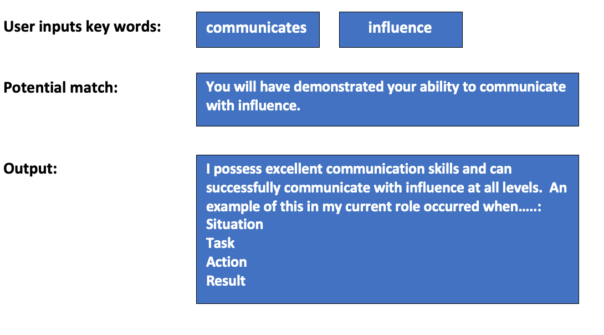

| Name: | Jennifer Nancarrow |
| Student ID: | 3960175 |
| Student Email: | s3960175@student.rmit.edu.au |
| GitHub Repository: | https://github.com/JenTheOldChick/JenTheOldChick.github.io |
| GitHub Pages: | https://jentheoldchick.github.io |

I was born in Western Australia to an Australian mother and German father. I am 43 years old, have been married since I was twenty and have lived in Canberra most of my life. I have two surly teenagers, two cats and a dog.
I enlisted as a Signaller in the Australian Army Reserves when I was 17 and completed one of the last Morse code courses run by the Army School of Signals. Through my Reserves experience, I later fell into a career in the Australian Intelligence Community (AIC) and worked my way up through a variety of corporate and operational roles to the executive level.
I resigned from Commonwealth employment in October 2020 and have since worked as the Business/Operations Manager for a local company that sources highly skilled Information Technology (IT) workers for contracting roles within the AIC. The transition from working within a SCIF (Sensitive Compartmented Information Facility) to working remotely was mind-blowing, particularly being able to work comfortably on the couch in my active wear with freely given administrative access to the latest cloud-based technologies.
I have a Year 12 Certificate and have completed a range of private industry certifications in Project Management. I have also completed several short courses over the years including HTML, Tableau, Visual Basic, MobileIron for example. I am a skilled Excel user and taught myself macros to automate repetitive tasks, such as consolidating data.
My interest in IT started when my mother purchased our first computer, an Osborne 386SX. I was thrilled with uncovering access to GORILLAS.BAS through the command prompt. I have owned just about every console on offer and am still to this day fascinated with Pokémon Go and Animal Crossing. I am an old nerd.
Early in my career, I was transferred into a remediation role with the Department of Defence to help address audit findings surrounding leave and payroll administration. I had the relevant systems (user) experience and understood the data, so was sent to Oracle query reporting training. I then learned how to interrogate multiple payroll systems to pull sample data for audit and internal controls testing. This article provides some background to my first major remediation job – supporting the auditors appointed by Parliament: https://www.abc.net.au/news/2009-03-02/angry-fitzgibbon-sends-auditors-in-over-sas-pay/1605686 (Rodgers, E 2009, ‘Angry Fitzgibbon sends auditors in over SAS pay bungle’, ABC News, 02 March, viewed 12 June 2022
I have enrolled in RMIT through Open Universities Australia as I want to study flexibly. I have also heard that RMIT has an excellent reputation. I have always wanted to obtain a tertiary qualification and have chosen IT simply to improve my own knowledge. I am studying for myself and have no current plans to launch an IT career, though I will likely continue with some casual consultancy work and implement what I learn along the way. I want to better understand the fundamentals of IT – from building computers to networks and programming. I am an experienced user but don’t understand how the magic happens in the backend. I also want to gain an understanding of the amazing tools available today.
For the purposes of this task, I have chosen to launch my second career as a Software Developer. The company I worked for most recently allowed me to develop my own procedures and to streamline their business processes. For example, I developed a JIRA board to track employee onboarding tasks. Employee onboarding and many of the company’s processes were previously managed using multiple spreadsheets. I enjoy this type of work as I love finding solutions to problems.
Like many Canberrans, I have often dreamt of moving ‘up north’. This role (SEEK, n.d, viewed 08 June 2022, https://www.seek.com.au/job/57136052?type=standout#sol=f7980bd70b82b30d28e5b21ccbeebb008fccd5e8 ) is offered as a short-term contract or temporary employee engagement, which suits my family’s needs and likely pays reasonably well.
The position advertisement is quite holistic, with the successful applicant needing to develop software as well as provide advice on business solutions, for example. In my last government role working within a Program Management Office, I uncovered very poor understanding and management of System Development Lifecycles and worked to remediate asset management practices. This role appeals to me as I already have some relevant experience (including PRINCE2, Agile, advice on business solutions) but am missing the final piece – technical knowledge and the preferred degree, which I am working towards.The role requires experience in Azure DevOps, for example. Coming from a technical division, I have heard of all these terms and products before, but I have very little knowledge of them. For this reason, I have hit a career ceiling and am limited to continuing as a ‘generalist manager’. Completing the Bachelor of IT through RMIT will expose me to industry standards and allow me to gain confidence in learning new programming languages, such as C# as required in the advertisement.
The results for three personality profile tests are summarised below.
I completed a Myers-Briggs Type Indicator test through 16Personalities (2011-2022, NERIS Analytics Limited, viewed 01 June 2022, https://www.16personalities.com). My results show that I am an ‘Assertive Defender (ISFJ-A)’. I am introverted though assertive, efficient, and practical. The results also show that I value order and prefer to work alone. Interestingly, the test also assessed me as ‘feeling’ in nature, meaning I am empathetic and prioritise cooperation. This appears counter-intuitive at first glance, and although I do prefer working alone, cooperation and teamwork are skills that I have developed over time through necessity in the workplace.
I then completed the True Colours Test (2022, Infinity Loop Capital, viewed 01 June 2022, https://my-personality-test.com/true-colours). This test assessed me as having a ‘gold’ personality. The results were similar to the Myers-Briggs test evaluating me as dependable, prepared, organised, and caring. The results also show that I believe there is always a right and wrong way to do things and that I am a rule-follower. Amusingly, the test referred me to a career in finance or public service, which is what I have recently left!
I also completed the Royal Melbourne Institute of Technology’s Personal Learning Profile (PLP) (n.d, viewed 13 June 2022, https://rmit.instructure.com/courses/59474/external_tools/92686). The PLP profile summary pointed out my strengths align to academic drive and accessing support. Personal value was highlighted as a focus area, though I am not likely to sign up for co-curricular activities as suggested.
The results of each profile teste are not surprising. I have completed numerous personality tests in the past and am mindful of my strengths and weaknesses. Essentially, while working in a team setting, I can easily become frustrated if tasks are not completed on time and to the highest standard. However, I have a lot of experience in working and managing teams. I am also quite relaxed about the course requirements given that I am studying flexibly with little time pressure.
My experience and compassionate nature will ensure that I engage with people politely and in a caring manner. Also, being an introvert who has learned to exhibit extroverted behaviours through necessity, I am confident and will contribute my own ideas as well as consider the ideas and concerns of other team members. As I look to form a team, I will seek out people who contribute through the discussion boards. Contribution demonstrates personal motivation as well as willingness to complete tasks. I will also focus on the project idea/s I find most interesting.
My project idea is to develop a website that assists people in responding to Australian Public Service (APS) style selection criteria. A database of commonly published selection criteria would be developed by drawing from advertisements through https://www.apsjobs.gov.au but could broaden in future to include data from other job adverts. The website would generate lead-in phrases based on keywords input by the user. A sample of commonly published selection criteria using those keywords would display, allowing the user to select the most alike and would then generate a selection of sample lead-in sentences to assist the user in structuring a response.
As a former manager working for government and then in securing talent for government roles, I have spent considerable time assisting staff and potential contractors with job applications. I do not believe the quality of written responses is always demonstrative of a person’s ability to do the job, particularly at entry or lower levels. Through experience, I have found that people who have assistance in writing applications or those who are already APS employees with developed networks generally secure an interview, whilst those who are attempting to break into the APS and do not understand the language expectations do not.
Applying for a job in the private sector can be as straight-forward as meeting for coffee and discussing potential roles before an offer is made. Applying for APS roles, however, generally requires the submission of personal information, a written application including responses to the specified criteria and role requirements, as well as one or more interviews.
Some areas within the APS are moving away from stringent response requirements, for example, requiring a single page pitch or a word-count based summary of skills against the requirements. However, applicants are still expected to understand the performance requirements for each APS level as specified within the Integrated Leadership System framework. The Australian Public Service Commission (APSC) publication ‘Cracking the Code. Shape Australia. Create your future.’ (Commonwealth of Australia, 2019) is a resource for applicants outlining the entirety of the application process.
The premise of this project is that it is easier for APS staff assessing applications to look for expected key words and structure than to spend time interpreting a person’s responses against the requirements. This project seeks to assist applicants by prompting them to cite examples with lead-in phrases using expected conventions. Applicants do have the option of accessing professional career coaching services, however, these services may be expensive.
An example of the user input and product output is shown below:

Obstacles to completion of the project at present include:
Drawbacks mainly include a lack of interest from other students to pursue the project given the bland nature of the content and basic technical requirements.
A laptop or desktop computer for each team member is the only hardware requirement to complete this project. A hosted website with sufficient storage will allow for storage and recall of selection criteria samples and the matched responses that are developed. However, the project would also require a method to capture and import selection criteria contained within APS job advertisements. A regular expression tool (regex) could be developed and tested to assist with this. Although not all APS job advertisements are structured in the same manner, the tool could work based on searching for numbered or bulleted lists, for example.
The project team would be required to develop a website but could use WordPress, for example, if needed. The most likely skill deficit would be found in needing to extract selection criteria from advertisements, however, regex training and test tools are available and other methods may also be identified. The team would also need non-technical skills to develop logical phrases that would trigger an applicant’s response to selection criteria. However, once several examples are established, this would become easier to replicate. It is feasible that the project team could develop or already possess many of the skills required to complete the project.
If the project were successful, candidates wishing to apply for APS jobs would have access to a tool that provides logical assistance in the form of prompts, allowing them to develop selection criteria responses. This tool may also assist the APS in identifying a larger pool of potential talent and in filling vacancies in a shorter period. This project could have commercial value in the future, particularly if an appropriate licence could be obtained to incorporate use of the Integrated Leadership System (ILS) used by the APSC for detailing performance requirements for each APS level. An interactive self-assessment tool could also be developed and provided for applicant use.